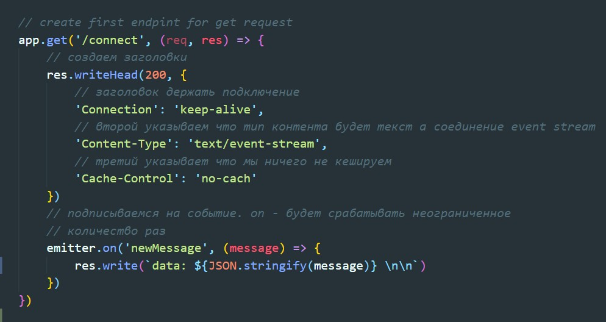
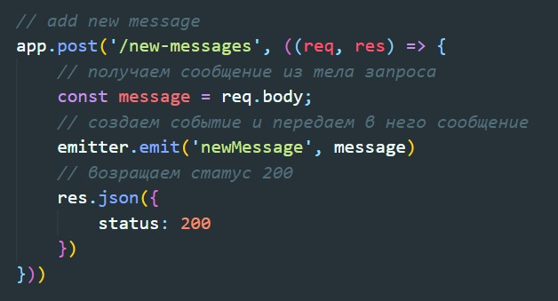
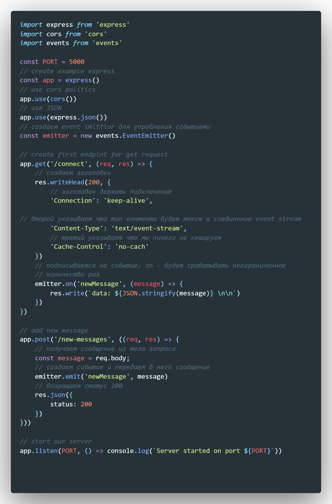
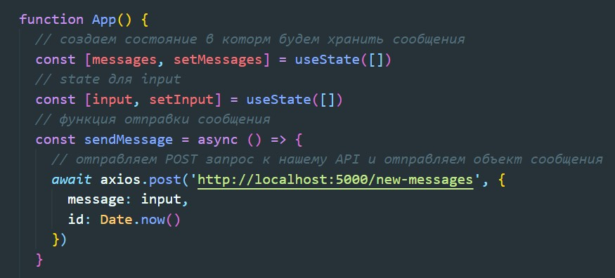
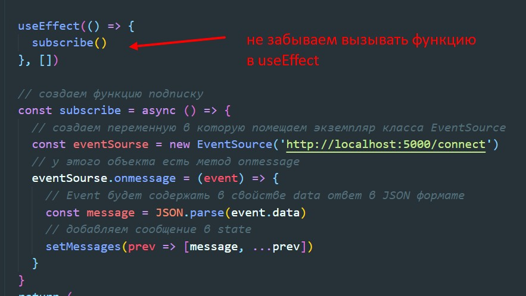

Event soursing - работает поверх HTTP протокола. Сздесь уже устанавливается постоянное подключение, но в отличии от вебсокетов, это подключение одностороннее. Только сервер может отправлять какие-то данные на клиент. Event soursing стоит использовать только в тех случаях, когда вся мощь вебсокетов нам не нужна и когда двухсторонний обмен сообщениями между клиентом и сервером не подразумевается. Т.е. нам достаточно получать от сервера какую-нибудь информацию. Например уведомления, какие-то события. Для необходимости Event soursing не нужно поднимать еще один сервер.
Инициализация проекта
npm init -yУстановка необходимых зависимостей
npm i express cors ws nodemonПрописываем стандартную конфигурацию сервера

Далее создаем endpoint для get запроса. На этот запрос будет создаваться вечное соединение. И в случае возникновения события в качестве response будет возвращаться сообщение. При этом соединение не будет разрываться:
Здесь важно отметить про создание заголовков:
Теперь что касается метода res.write. У этого метода есть требования к передаваемой строке. Во-первых строка должна начинаться со слова data:, затем пробел, после мы данные переводим в JSON и в конце строки должно быть через пробел два переноса строки. Иначе работать не будет
POST запрос для создания сообщения будет таким же как и в long-pulling.
Целиком файл выглядит вот так
Состояние остается тем же, функция отправки сообщения так же остается без изменений
Так будет выглядеть функция получения сообщений
